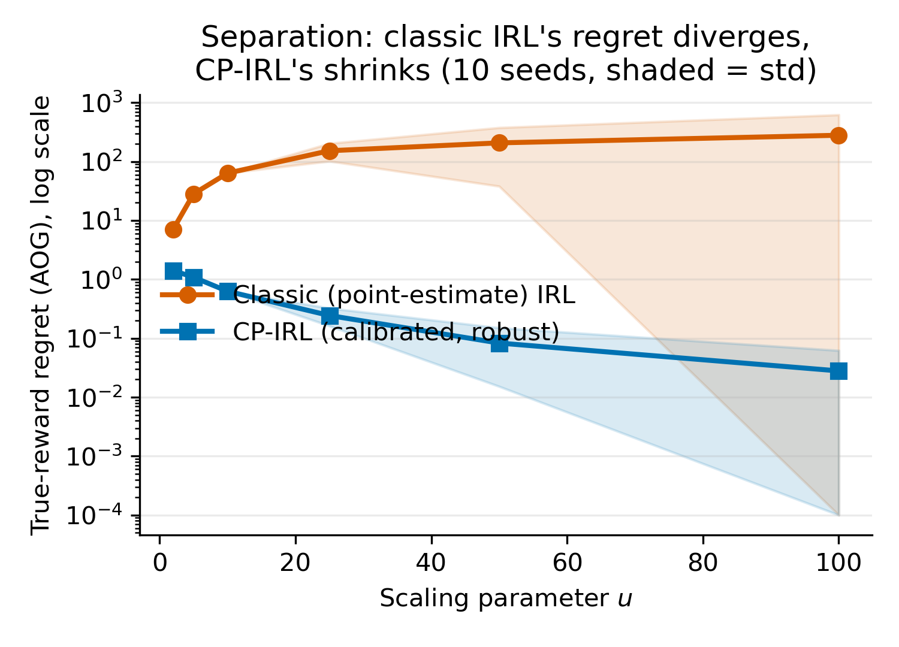

如果只有五分钟时间，请记住这三件事——它们是把 CIO 从"单步决策"推广到"序列决策 (MDP)"过程中真正解决的三个此前无人解决的数学难题：
为了防止在大一高代/数分知识与顶会论文符号之间产生混淆，本章整理了两篇论文中用到的全部数学符号、定义域及物理含义。
| 符号 | 所属域 / 维度 | 物理与数学含义 |
|---|---|---|
| $\theta$ | $\mathbb{R}^d$ | 目标函数参数/奖励权重向量。衡量各项特征（如路线时间、成本、偏好）在决策者心中的权重。 |
| $\theta^*$ | $\mathbb{R}^d, \|\theta^*\|_2 = 1$ | 客观真实参数 (Ground-truth Parameter)。客观世界真正的成本/奖励向量。 |
| $\hat{\theta}$ | $\mathbb{R}^d$ | 决策者感知参数 (Perceived Parameter)。具体决策者主观认知的参数，受个体噪声或偏见影响。 |
| $\bar{\theta}$ | $\mathbb{R}^d, \|\bar{\theta}\|_2 = 1$ | 反向优化点估计 (Point Estimate)。算法从训练集中拟合出来的单一中心参数。 |
| $u$ | $\mathcal{U} \subseteq \mathbb{R}^m$ | 外生环境/上下文参数 (Exogenous Context)。正向问题的外部条件，如导航起点终点、背包容量。 |
| $x$ | $\mathbb{R}^n$ | 决策向量 (Decision Vector)。决策者做出的选择，如路径选择向量、背包物品选择向量。 |
| $\mathcal{X}(u)$ | $\mathcal{X}(u) \subseteq \mathbb{R}^n$ | 可行决策区域 (Feasible Region)。由约束条件 $Ax \ge b$ 确定的凸集或多面体。 |
| $f(\theta, x)$ | $\mathbb{R}^n \times \mathbb{R}^d \to \mathbb{R}$ | 正向目标函数/成本函数。假设为 $\theta$ 的线性函数，即 $f(\theta, x) = \theta^\top x$。 |
| $\mathcal{X}^{\text{OPT}}(\theta, u)$ | $\mathcal{X}^{\text{OPT}} \subseteq \mathcal{X}(u)$ | 正向最优解集合。$\arg\min_{x \in \mathcal{X}(u)} f(\theta, x)$。 |
| $\Theta^{\text{OPT}}(\hat{x}, u)$ | $\Theta^{\text{OPT}} \subseteq \mathbb{R}^d$ | 反向可行参数集 (Inverse Feasible Set)。能使观察到的决策 $\hat{x}$ 达到正向最优的所有 $\theta$ 集合。 |
| 符号 | 所属域 / 维度 | 物理与数学含义 |
|---|---|---|
| $\mathcal{D}_{\text{train}}, \mathcal{D}_{\text{val}}$ | 数据集集合 | 训练集与校准/验证集。大小分别为 $N_{\text{train}}, N_{\text{val}}$。 |
| $\gamma$ | $[0, 1]$ | 目标置信度水平 (Confidence Level)。希望不确定性集覆盖未来真实参数的最小概率（如 80% 或 90%）。 |
| $\alpha$ / $\alpha_\gamma$ | $[0, \pi]$ | 球冠半顶角 (Cap Angle)。控制球面不确定性集半径的角度；$\alpha_\gamma$ 为经校准后满足置信度的最小角度。 |
| $\mathcal{C}(\bar{\theta}, \alpha)$ | $\mathbb{R}^d$ 上的球面凸集 | 符合性不确定性集 (Uncertainty Set)。定义为 $\{\theta : \|\theta\|_2 = 1, \theta^\top \bar{\theta} \ge \cos \alpha\}$。 |
| $c_k$ | $[-1, 1]$ | 第 $k$ 个样本的校准拟合得分。该样本反向可行集与点估计中心的最大余弦相似度。 |
| $\tau$ | $\mathbb{N}^+$ | 符合性排序阈值位置。$\tau = \lceil \gamma(N_{\text{val}} + 1) \rceil$。 |
| $\text{RFO}$ | 优化模型 | 鲁棒正向优化 (Robust Forward Optimization)。$\min_x \max_{\theta \in \mathcal{C}} f(\theta, x)$。 |
| 符号 | 所属域 / 维度 | 物理与数学含义 |
|---|---|---|
| $\mathcal{S}, \mathcal{A}$ | 有限集合 | 状态空间与动作空间。大小分别用 $|S|, |A|$ 表示。 |
| $P(s'|s,a)$ | $|S| \times |A| \times |S|$ 张量 | 状态转移概率核 (Transition Kernel)。在状态 $s$ 采取动作 $a$ 转移到 $s'$ 的概率。 |
| $\beta$ | $(0, 1)$ | 折扣因子 (Discount Factor)。远期奖励的折现率。 |
| $\phi(s,a)$ | $\mathbb{R}^d$ | 状态-动作特征向量。将物理环境映射为 $d$ 维特征。 |
| $r_\theta(s,a)$ | $\mathbb{R}$ | 线形奖励函数。$r_\theta(s,a) = \phi(s,a)^\top \theta$。 |
| $\pi(a|s)$ | $\mathcal{S} \to \Delta(\mathcal{A})$ | 策略 (Policy)。在状态 $s$ 下动作的概率分布。 |
| $V^\pi_\theta(s)$ | $\mathbb{R}^{|S|}$ | 状态价值函数 (State-Value Function)。在策略 $\pi$ 和奖励参数 $\theta$ 下的折扣累积回报。 |
| $Q^\pi_\theta(s,a)$ | $\mathbb{R}^{|S| \times |A|}$ | 动作价值函数 (Action-Value Function)。在状态 $s$ 采取 $a$ 后的预期累积回报。 |
| $W_\pi$ | $\mathbb{R}^{|S| \times d}$ | 贝尔曼预解式矩阵 (Bellman Resolvent)。$W_\pi = (I - \beta P_\pi)^{-1} \Phi_\pi$。使得 $V^\pi_\theta = W_\pi \theta$。 |
| $M_\pi(s,a)$ | $\mathbb{R}^d$ | 动作价值特征向量。使得 $Q^\pi_\theta(s,a) = M_\pi(s,a)^\top \theta$。 |
| $d(s,a)$ / $d_\pi$ | $\mathbb{R}^{|S| \times |A|}$ | 折扣占用测量 (Occupancy Measure)。策略 $\pi$ 在状态-动作对上的访问频率。 |
| $\mathcal{M}(P)$ | $\mathbb{R}^{|S| \times |A|}$ 上的多面体 | 占用测量凸多面体。转移矩阵 $P$ 下所有物理可行占用测量的集合。 |
为了让刚学完高等代数和数学分析的大一同学毫无障碍地阅读机器学习顶会论文，本章首先建立严谨的数学符号与概念映射。
正向优化问题 (Forward Optimization, FO) 是指：已知目标函数参数 $\theta \in \mathbb{R}^d$ 和环境/约束参数 $u \in \mathcal{U}$，求解最优决策 $x \in \mathbb{R}^n$：
$$\text{FO}(\theta, u): \min_{x \in \mathcal{X}(u)} f(\theta, x)$$在两篇论文中，目标函数 $f(\theta, x)$ 均假设为关于 $\theta$ 的线性函数，即 $f(\theta, x) = \theta^\top x$（或 $f(\theta, x) = \sum_{i=1}^d \theta_i f_i(x)$）。可行域 $\mathcal{X}(u)$ 为凸集或多面体。
最优解集合定义为：
$$\mathcal{X}^{\text{OPT}}(\theta, u) := \arg\min_{x \in \mathcal{X}(u)} f(\theta, x)$$当 $\text{FO}$ 为线性规划 (LP) 时：$\min_{x} c^\top x \quad \text{s.t.} \quad A x \ge b, x \ge 0$。
其对偶问题为：$\max_{y} b^\top y \quad \text{s.t.} \quad A^\top y \le c, y \ge 0$。
强对偶定理 (Strong Duality) 保证原问题最优值等于对偶问题最优值。决策 $x$ 是最优解的充要条件存在对偶变量 $y$ 满足对偶可行性与强对偶等式。
单步决策拓展到序列决策时，数学模型变为 MDP $\mathcal{M} = (\mathcal{S}, \mathcal{A}, P, \beta, \phi)$：
给定策略 $\pi(a|s)$，其累积期望回报定义为状态价值函数 (Value Function) $V^\pi_\theta(s)$：
$$V^\pi_\theta(s) = \mathbb{E}_\pi \left[ \sum_{t=0}^\infty \beta^t r_\theta(s_t, a_t) \;\middle|\; s_0 = s \right]$$写成矩阵形式，满足贝尔曼期望方程 (Bellman Expectation Equation)：
$$V^\pi_\theta = r^\pi_\theta + \beta P_\pi V^\pi_\theta$$其中 $r^\pi_\theta(s) = \sum_a \pi(a|s) \phi(s,a)^\top \theta = \Phi_\pi(s, \cdot) \theta$，$P_\pi(s, s') = \sum_a \pi(a|s) P(s'|s,a)$。
因为 $P_\pi$ 是随机矩阵（各行和为 1）且 $\beta < 1$，故谱半径 $\rho(\beta P_\pi) \le \beta < 1$。根据高等代数中的 Neumann 级数定理，矩阵 $(I - \beta P_\pi)$ 必可逆，且：
$$V^\pi_\theta = (I - \beta P_\pi)^{-1} \Phi_\pi \theta$$线性算子 $W_\pi := (I - \beta P_\pi)^{-1} \Phi_\pi \in \mathbb{R}^{|S| \times d}$ 称为贝尔曼预解式。这表明：在固定策略 $\pi$ 下，价值函数 $V^\pi_\theta$ 是参数 $\theta$ 的严格线性映射！
符合性预测由 Vovk 等人在 2005 年提出，是一种无需分布假设 (Distribution-free) 且具备有限样本 (Finite-sample) 覆盖率保证的不确定性量化方法。
假设我们有独立同分布 (i.i.d.) 或可交换 (Exchangeable) 的数据点 $Z_1, Z_2, \dots, Z_{N_{\text{val}}}, Z_{\text{new}}$。为了衡量一个新样本与已知数据的“拟合程度”，定义不符合度得分 (Nonconformity Score) $S_k = s(Z_k)$。
设 $S_1, S_2, \dots, S_{N_{\text{val}}}, S_{\text{new}}$ 为连续随机变量。由于数据具有可交换性，新样本得分 $S_{\text{new}}$ 在全体得分（升序排列后）中的排名 (Rank) 在 $\{1, 2, \dots, N_{\text{val}} + 1\}$ 上服从均匀分布！
即对于任意 $k \in \{1, \dots, N_{\text{val}}+1\}$，$\mathbb{P}(\text{Rank}(S_{\text{new}}) = k) = \frac{1}{N_{\text{val}} + 1}$。
因此，若选择分位数位置 $\tau = \lceil (1-\alpha)(N_{\text{val}} + 1) \rceil$，并将阈值设定为验证集中第 $\tau$ 大的得分 $S^{(\tau)}$，则新样本得分不超过该阈值的概率严格满足：
$$\mathbb{P}\left( S_{\text{new}} \le S^{(\tau)} \right) \ge \frac{\tau}{N_{\text{val}} + 1} \ge 1 - \alpha$$论文《Conformal Inverse Optimization》(Lin et al., NeurIPS 2024) 解决了传统反向优化在决策推荐中的无界缺陷。
反向优化 (Inverse Optimization, IO) 的目标是：给定观测到的决策数据 $\mathcal{D} = \{(\hat{x}_k, u_k)\}_{k=1}^N$，求解潜在参数 $\theta$。
最常用的损失函数是次优性损失 (Sub-optimality Loss)：
$$\ell_S(\hat{x}, \mathcal{X}^{\text{OPT}}(\theta, u)) := f(\theta, \hat{x}) - \min_{x \in \mathcal{X}(u)} f(\theta, x)$$经典 IO 求解点估计 $\bar{\theta} = \arg\min_{\theta \in \Theta} \frac{1}{N} \sum_{k=1}^N \ell_S(\hat{x}_k, \mathcal{X}^{\text{OPT}}(\theta, u_k))$，然后直接使用 $\bar{\theta}$ 求解正向问题 $\bar{x}_{\text{IO}}(u) \in \arg\min_{x \in \mathcal{X}(u)} f(\bar{\theta}, x)$。
评估指标：
经典点估计 IO 会将人群异质性（不同决策者主观感知的差异）强制坍缩为一个单一的点 $\bar{\theta}$。论文证明：即使样本量 $N \to \infty$，点估计也会收敛到一个退化的偏斜方向，导致 downstream 决策的 $\text{AOG}$ 和 $\text{POG}$ 趋于无界无穷大 ($\to \infty$)！
CIO 提出了“先校准，后鲁棒”的全新管线（Calibrate-then-Robustify）：
为了求解最小的半顶角 $\alpha$，CIO 构造了如下校准优化问题：
$$\begin{aligned} \text{CP}(\bar{\theta}, \mathcal{D}_{\text{val}}, \gamma): \min_{\alpha, \{\theta_k\}} \quad & \alpha \\ \text{s.t.} \quad & \hat{x}_k \in \mathcal{X}^{\text{OPT}}(\theta_k, u_k), \quad \forall k \in \mathcal{K}_{\text{val}} \\ & \sum_{k \in \mathcal{K}_{\text{val}}} \mathbf{1}\left[ \theta_k \in \mathcal{C}(\bar{\theta}, \alpha) \right] \ge \lceil \gamma (N_{\text{val}} + 1) \rceil \\ & \|\theta_k\|_2 = 1, \quad 0 \le \alpha \le \pi \end{aligned}$$定义每个验证样本 $k$ 的最大相似度得分（拟合分数）：
$$c_k := \max_{\theta_k} \left\{ \theta_k^\top \bar{\theta} \;\middle|\; \hat{x}_k \in \mathcal{X}^{\text{OPT}}(\theta_k, u_k), \; \|\theta_k\|_2 \le 1 \right\}$$设 $\Gamma_\tau$ 为提取集合中第 $\tau$ 大元素的算子，其中 $\tau = \lceil \gamma (N_{\text{val}} + 1) \rceil$。则最优半顶角为：
$$\alpha_\gamma = \arccos \left( \Gamma_\tau \left( \{c_k\}_{k \in \mathcal{K}_{\text{val}}} \right) \right)$$数学意义：大一同学请注意，该定理将包含 $N_{\text{val}}$ 个耦合约束的大规模非凸混合整数规划，分解为 $N_{\text{val}}$ 个完全独立的 $d$ 维凸优化子问题！求解完后只需做一次 $O(N_{\text{val}} \log N_{\text{val}})$ 的排序即可取分位数。
定义不符合度测量函数 $A_{\bar{\theta}}(\hat{x}, u) := \max_{\theta} \{ \theta^\top \bar{\theta} : \hat{x} \in \mathcal{X}^{\text{OPT}}(\theta, u), \|\theta\|_2 \le 1 \}$。则 $c_k = A_{\bar{\theta}}(\hat{x}_k, u_k)$。
根据不确定性集的构造条件，“存在能使新样本 $\hat{x}_{\text{new}}$ 最优的 $\theta \in \mathcal{C}(\bar{\theta}, \alpha_\gamma)$” 等价于事件：
$$A_{\bar{\theta}}(\hat{x}_{\text{new}}, u_{\text{new}}) \ge \cos \alpha_\gamma = \Gamma_\tau(\{c_k\})$$由于样本是独立同分布的，集合 $\mathcal{D}' = \mathcal{D}_{\text{val}} \cup \{(\hat{x}_{\text{new}}, u_{\text{new}})\}$ 中的数据点是完全可交换 (Exchangeable) 的。新样本得分在整个集合排名高到低的第 $\tau$ 名或更靠前的概率严格满足：
$$\mathbb{P}\left( \Theta^{\text{OPT}}(\hat{x}_{\text{new}}, u_{\text{new}}) \cap \mathcal{C}(\bar{\theta}, \alpha_\gamma) \neq \emptyset \right) \ge \frac{\tau}{N_{\text{val}} + 1} \ge \gamma$$证毕。$\blacksquare$
为了直观说明为什么点估计会失败，论文设计了一个精妙的二维线性规划反例：
这两个概念分别是有界凸集与无界凸锥的"生成元"，是理解 Example 1 为何能把"整个连续可行域/参数域"的分析压缩成"比较少数几个候选"的根本原因。
极点：凸集 $S$ 中的点 $x$ 称为极点，当且仅当它不能写成 $S$ 中两个不同点的非平凡凸组合：
$$x = \lambda y + (1-\lambda) z, \; y,z \in S, \; \lambda \in (0,1) \implies y = z = x$$直观地说，极点是凸集"棱角分明的顶点"——无法被集合内其它两点夹在中间的点。对多面体而言，极点就是几何意义上的顶点，例如本例梯形可行域的 $x_1,x_2,x_3,x_4$。这之所以重要，是因为线性规划的最优解必在某个极点取得（LP 基本定理），所以 Example 1 的分析只需比较四个顶点谁的（最坏情况）目标值最小，而不必考虑整个连续可行域。
极射线：是极点概念在无界凸锥上的类比。凸锥 $K$ 中形如 $\{\lambda v : \lambda \ge 0\}$ 的射线称为极射线，当且仅当它不能被分解为锥内两条不同射线上点的正组合；直观上，它是锥的"边界生成方向"，锥内任意向量都可以写成极射线方向的非负组合。本例中参数集合 $\Theta = \{(\cos\delta,\sin\delta) \mid \delta \in (0,\pi/2)\}$ 撑起第一象限里的一个二维扇形锥，它的两条极射线正是 $\delta \to 0^+$（方向 $(1,0)$）与 $\delta \to (\pi/2)^-$（方向 $(0,1)$），即后文图示中的两条灰色边界箭头——整个扇形内任意方向的 $\theta$ 都是这两条极射线方向的凸组合。
关于 $\theta$ 只需关心方向：由于目标函数是线性的 $f(\theta,x)=\theta^\top x$，对任意 $\beta>0$ 都有 $\arg\min_x \theta^\top x = \arg\min_x (\beta\theta)^\top x$，即最优解只由 $\theta$ 的方向决定，与其模长无关——这正是论文里把所有 $\theta$ 限制在单位球面 $\|\theta\|_2=1$ 上、把 $d$ 维参数简化为一个纯方向信号的原因。$\theta$ 是自由向量，图上把它的起点画在原点或某个顶点上，只是为了直观展示"等高线推进方向"，不代表它"属于"某个顶点。
Example 1 模型设定：
$$\begin{aligned} \text{FO}(\theta, u): \min_{x_1, x_2} \quad & \theta_1 x_1 + \theta_2 x_2 \\ \text{s.t.} \quad & x_1 + u x_2 \ge u \\ & 0 \le x_1 \le u, \quad 0 \le x_2 \le 2 \end{aligned}$$可行域为梯形，极点为 $x_1=(0,1), x_2=(0,2), x_3=(u,0), x_4=(u,2)$。
假设真实参数 $\theta^* = (\cos(\pi/4), \sin(\pi/4)) = (\frac{\sqrt{2}}{2}, \frac{\sqrt{2}}{2})$。决策者感知的 $\hat{\theta} = (\cos\delta, \sin\delta)$，其中角度 $\delta \sim U(0, \pi/2)$ 均匀分布。
把图中的视觉元素与数学对象对照起来，看图的逻辑链就非常清楚：
| 图中元素 | 数学含义 |
|---|---|
| 灰色梯形区域 | 可行域 $\mathcal{X}(u)$，四个顶点 $x_1,x_2,x_3,x_4$ |
| 黑色箭头 | 真实参数 $\theta^*=(\cos\frac{\pi}{4},\sin\frac{\pi}{4})$，方向 $45^\circ$ |
| 灰色箭头 | 参数扇形锥 $\Theta$ 的两条极射线（边界方向 $\delta\to0^+$ 与 $\delta\to(\pi/2)^-$） |
| 黑色圆点 | $\text{FO}(\theta^*,u)$ 的最优解，即真实参数下应做出的决策 $x_1=(0,1)$ |
| 蓝色箭头/圆点 | 经典 IO 的点估计 $\bar\theta_N \to \theta_u$，以及它在退化长边上"随机乱选"的推荐决策 |
| 绿色弧形区域/圆点 | CIO 校准出的不确定性集 $\mathcal{C}(\bar\theta,\alpha)$，以及 RFO 在此集合下求出的鲁棒决策，稳定命中 $x_1=(0,1)$ |
核心逻辑链（五步）：① LP 最优解只需在四个极点里比较；② 随 $\delta$ 从 $0$ 增大到 $\pi/2$，最优顶点在临界角 $\delta_u$ 处从 $x_1$ 跳变到 $x_3$——目标函数连续但最优解不连续；③ 次优性损失点估计恰好收敛到这个病态跳变点 $\theta_u$，而非真实的 $\theta^*$；④ 在 $\theta_u$ 处整条长边 $x_1+ux_2=u$ 同时最优，经典 IO 在边上乱选，AOG 随 $u\to\infty$ 发散；⑤ CIO 以 $\bar\theta$ 为中心校准出弧形不确定集，做最坏情况鲁棒优化，因为要"防守"整个弧形范围，最终稳定落在顶点 $x_1=(0,1)$——恰好是真实最优解，AOG 归零。
切割临界角 $\delta_u := \arccos(1/\sqrt{1+u^2})$，对应方向 $\theta_u = \left(\frac{1}{\sqrt{1+u^2}}, \frac{u}{\sqrt{1+u^2}}\right)$，它恰好垂直于约束边 $x_1+ux_2=u$。分析可知：
于是数据集中只会观测到两类决策：$\hat{x}=(0,1)$（出现概率 $p_1 = \frac{2\delta_u}{\pi}$）和 $\hat{x}=(u,0)$（概率 $p_2=1-\frac{2\delta_u}{\pi}$）。对每一类观测点，把次优性损失 $\ell_S(\hat{x},\theta) = f(\theta,\hat{x}) - \min_x f(\theta,x)$ 写成关于 $\theta=(\cos\delta,\sin\delta)$ 的分段函数：
$$l_1(\theta) := \ell_S\big((0,1),\theta\big) = \begin{cases} 0, & \delta \le \delta_u \;(\text{此时 } (0,1) \text{ 本就最优}) \\ \theta_2 - u\theta_1, & \delta > \delta_u \;(\text{此时最优解是 } (u,0)) \end{cases}$$ $$l_2(\theta) := \ell_S\big((u,0),\theta\big) = \begin{cases} u\theta_1 - \theta_2, & \delta \le \delta_u \;(\text{此时最优解是 } (0,1)) \\ 0, & \delta > \delta_u \;(\text{此时 } (u,0) \text{ 本就最优}) \end{cases}$$经典 IO 求解 $\min_\theta \left[\frac{N_1}{N} l_1(\theta) + \frac{N_2}{N} l_2(\theta)\right]$。由于 $\delta_u \in (0,\pi/2)$ 且 $\delta \sim U(0,\pi/2)$，大数定律保证当 $N\to\infty$ 时数据集里 $N_1>0$ 个 $(0,1)$ 和 $N_2>0$ 个 $(u,0)$ 同时存在（概率 $\to 1$）。两个损失都 $\ge 0$，总损失的下界为 $0$；要同时让 $l_1(\theta)=0$ 且 $l_2(\theta)=0$，唯一可能是 $\theta_2-u\theta_1=0$，即 $\theta=\theta_u$——这就是唯一能"同时完美解释"两类矛盾观测的点。因此 $\bar{\theta}_N \xrightarrow{p} \theta_u$（这就是 Lemma 1）。
而对于参数 $\theta_u$，包含约束 $x_1 + u x_2 = u$ 的整个线段上的所有点都是最优解（因为 $\theta_u$ 恰好垂直于这条边，等高线与约束边重合）！经典 IO 的决策策略 $\bar{x}_{\text{IO}}(u)$ 会在线段上均匀采样。
计算真实次优性间隙 $\text{AOG}$：
$$\text{AOG}(\bar{x}_{\text{IO}}) = \int_0^{\sqrt{u^2+1}} \left[ \frac{\sqrt{2}}{2}\left( \frac{ut}{\sqrt{u^2+1}} + 1 - \frac{t}{\sqrt{u^2+1}} \right) \right] dt - \frac{\sqrt{2}}{2} = \frac{\sqrt{2}(u-1)}{4}$$当参数 $u \to \infty$ 时，$\text{AOG}(\bar{x}_{\text{IO}}) \to \infty$！点估计策略的真实间隙发散！直觉上：群体决策者的感知噪声有人偏左、有人偏右，次优性损失为了"和稀泥"式地同时解释两边的观测，被迫收敛到两者的相变临界方向 $\theta_u$，而这个方向恰好是让问题退化成"整条边都最优"的病态点。
CIO 求解 RFO：$\min_{x \in \mathcal{X}(u)} \max_{\theta \in \mathcal{C}(\theta_u, \alpha)} \theta^\top x$。取半顶角 $\alpha \in (0, \pi/2)$。
比较四个极点在不确定性集下的最坏情况目标值：
$$R(x_1) = \max_{\theta \in \mathcal{C}(\theta_u, \alpha)} \theta_2 = \begin{cases} \sin(\delta_u + \alpha) & \text{if } \alpha \le \pi/2 - \delta_u \\ 1 & \text{if } \alpha > \pi/2 - \delta_u \end{cases}$$ $$R(x_3) = \max_{\theta \in \mathcal{C}(\theta_u, \alpha)} u \theta_1 = \begin{cases} u \cos(\delta_u - \alpha) & \text{if } \alpha \le \delta_u \\ u & \text{if } \alpha > \delta_u \end{cases}$$由于 $u > 1$，利用三角恒等式可严谨证明：对任意 $\alpha \in (0, \pi/2)$，恒有 $R(x_1) < \min\{ R(x_2), R(x_3), R(x_4) \}$！
因此，CIO 鲁棒决策唯一确定为原点极点 $x_1 = (0,1)$。其真实间隙：
$$\text{AOG}(\bar{x}_{\text{CIO}}) = f(\theta^*, (0,1)) - f(\theta^*, (0,1)) = 0!$$无论 $u$ 多大，$\text{AOG}$ 恒为 0，彻底解决了无界风险。$\blacksquare$
论文《CP-IRL》(Chi, NeurIPS 2026 提交) 将 CIO 范式推广到马尔可夫决策过程 (MDP)。这面临两大数学障碍：
论文利用预解式矩阵 $W_\pi = (I - \beta P_\pi)^{-1} \Phi_\pi$，推导出动作价值函数 $Q^\pi_\theta(s,a)$ 关于 $\theta$ 的显式表达：
$$Q^\pi_\theta(s,a) = M_\pi(s,a)^\top \theta, \quad \text{其中 } M_\pi(s,a) := \phi(s,a) + \beta P(s,a,\cdot)^\top W_\pi$$对于观测到的演示者策略 $\hat{\pi}_k$，使该策略满足 Bellman 最优的参数集为：
$$\Theta(\hat{\pi}_k) = \left\{ \theta \in \mathbb{R}^d \;\middle|\; \|\theta\|_2 \le 1, \; M_{\hat{\pi}_k}(s,a)^\top \theta \le M_{\hat{\pi}_k}(s, \hat{\pi}_k(s))^\top \theta \quad \forall s \in \mathcal{S}, a \in \mathcal{A} \right\}$$单个演示者的校准得分拟合规划简化为仅关于 $\theta$ 的 $d$ 维凸优化：
$$c_k = \max_{\|\theta\|_2 \le 1} \left\{ \theta^\top \bar{\theta} \;\middle|\; M_{\hat{\pi}_k}(s,a)^\top \theta \le M_{\hat{\pi}_k}(s, \hat{\pi}_k(s))^\top \theta, \quad \forall s, a \right\}$$计算复杂度飞跃：变量维度从 $d + |S|$（包含数万个状态的价值变量）直接降至 $d$（奖励特征维数，通常 $d \le 10$）！
当两个演示者策略 $\pi_1, \pi_2$ 仅在 $k$ 个状态上的动作不同时，其转移矩阵差为低秩矩阵：$I - \beta P_{\pi_2} = I - \beta P_{\pi_1} + U V^\top$（其中 $U, V \in \mathbb{R}^{|S| \times k}$）。
应用 Woodbury 矩阵恒等式，更新预解式无需重新求解 $O(|S|^3)$ 的求逆：
$$(I - \beta P_{\pi_2})^{-1} = (I - \beta P_{\pi_1})^{-1} - (I - \beta P_{\pi_1})^{-1} U \left( I + V^\top (I - \beta P_{\pi_1})^{-1} U \right)^{-1} V^\top (I - \beta P_{\pi_1})^{-1}$$计算复杂度降低至 $O(k^2 |S| + k^3)$！
在 Robust MDP 中，一般的不确定性集会导致非凸优化。CP-IRL 证明了：只要不确定性仅存在于奖励参数 $\theta$（转移矩阵 $P$ 确定）， Robust MDP 必为严格的凸规划！
证明构造：引入占用测量向量 (Occupancy Measure) $d(s,a) := (1-\beta) \sum_{t=0}^\infty \beta^t \mathbb{P}(s_t=s, a_t=a)$。所有物理可达的占用测量构成一个闭凸多面体 $\mathcal{M}(P)$：
$$\mathcal{M}(P) = \left\{ d \ge 0 \;\middle|\; \sum_{a} d(s', a) = (1-\beta) \mu_0(s') + \beta \sum_{s,a} P(s'|s,a) d(s,a), \quad \forall s' \right\}$$策略 $\pi$ 的期望回报可写为线性函数 $\theta^\top \Phi^\top d$。鲁棒优化目标变为：
$$\max_{d \in \mathcal{M}(P)} \; g_\mathcal{C}(\Phi^\top d), \quad \text{其中 } g_\mathcal{C}(x) := \inf_{\theta \in \mathcal{C}} \theta^\top x$$因为 $g_\mathcal{C}(x)$ 是线性函数族逐点取下界 (Pointwise Infimum)，根据凸分析基本定理，$g_\mathcal{C}(x)$ 必为凹函数 (Concave Function)！复合线性映射 $\Phi^\top d$ 保持凹性。在凸多面体 $\mathcal{M}(P)$ 上最大化凹函数，即为一个极佳的凸规划 (Convex Program)。
上述凸性结论是否能推广到包含动态转移矩阵 $P$ 扰动的情形？CP-IRL 定理 4.2 给出否定回答：不能！即便耦合极微小的不确定性，凹性也会被破坏。
考虑 2 状态、2 动作 MDP，转移矩阵与奖励由标量参数 $t \in [0, 1]$ 耦合：
$$\theta(t) = 1 + t, \quad q(t) = 1 - t$$智能体策略参数 $p \in [0, 1]$ 表示采取动作 1 的概率。代入无限界折扣回报，导出的最坏情况价值函数为：
$$W(p) = \min_{t \in [0, 1]} \frac{p(1+t)}{1 - \beta p (1-t)}$$取折扣因子 $\beta = 0.9$。我们计算三个关键策略点 $p_1 = 0, \; p_2 = \frac{5}{9}, \; p_{\text{mid}} = \frac{5}{18}$：
Jensen 不等式检验：若 $W(p)$ 是凹函数，必须满足 $W\left(\frac{p_1 + p_2}{2}\right) \ge \frac{W(p_1) + W(p_2)}{2}$。
代入数值：
$$W(5/18) = \frac{10}{27} \approx 0.37037 < \frac{1}{2}\left( 0 + 1 \right) = 0.5$$凹性条件严格违背！ 这证明了只要不确定性集合耦合了转移概率， Robust MDP 就会失去凸性，变为非凸规划。因此 CP-IRL 确立了边界：奖励不确定性是保持凸性计算可行性的充要条件边界。
CP-IRL 在随机 MDP、方格世界 (Gridworld) 与 Objectworld 三种环境、六个消融实验维度上反复验证出一个极其重要且相当反直觉的结论：鲁棒对冲并不是"多多益善"的免费保险——它的价值取决于点估计错误的性质，而不仅仅是错误的大小。
想象两位司机：
司机 A（系统性偏差）——他的车速表被固定校歪了，永远比真实车速慢 10%。无论他多小心地"根据仪表估算车速"来决策，这个偏差都会稳定地把他引向错误的判断，而且路况越复杂，这个持续存在的偏差造成的损失就越大。这时候，"鲁棒决策"（不完全相信仪表，而是为一整个可能的真实车速区间做最坏情况准备）能显著避免灾难，因为真正的问题出在"仪表本身有毛病"，而鲁棒对冲恰好绕开了对单一错误仪表读数的依赖。
司机 B（纯噪声）——他的仪表是准的，只是每次读数有一点随机抖动（这次偏高一点，下次偏低一点，但平均起来是准的）。如果他也要"为最坏情况做准备"（仿佛仪表可能任意错到某个极端），他就会不必要地一直急刹车、绕远路——白白付出了"保险费"，却没有换来相应的安全收益，因为他的仪表本来就没有系统性的毛病。
CP-IRL 的核心发现就是：只有当"仪表"（点估计）存在真实的、结构性的系统偏差时，为最坏情况投保才划算；如果"仪表"只是有点抖动但整体无偏，投保就是净损失。这正是论文第 6、7 节实验部分反复验证、并诚实报告为"适用边界"而非回避的结论。
下图取自 CP-IRL 论文正文 Figure 1，直接对应 2.4 节 Example 1 反例在序列决策 (MDP) 版本下的真实计算结果：横轴 $u$ 为场景规模参数（越大代表决策边界的"陷阱"越极端），纵轴为真实次优性间隙 $\text{AOG}$（对数坐标），阴影区域为 10 次独立随机种子实验的标准差范围。

橙色曲线（经典点估计 IRL）的 $\text{AOG}$ 从 $u=2$ 时的 $7.07$ 一路发散到 $u=100$ 时的 $280.0$——完全符合 2.4 节手算推导中 $\text{AOG} \to \infty$ 的理论预言。蓝色曲线（CP-IRL 校准鲁棒决策）的 $\text{AOG}$ 反而从 $1.41$ 单调收敛到 $0.028$，随 $u$ 增大越来越逼近于零。这不是"理论上应该如此"的空谈，而是把定理里的每一个符号都代入真实代码、跑出来的可复现数字。
为了帮助大一同学建立完整的框架思维，下表对比了两篇论文在各个数学维度上的对应与演进关系：
| 数学维度 | Conformal IO (Lin et al. 2024) | CP-IRL (Chi 2026) |
|---|---|---|
| 决策场景 | 单步决策 (One-shot Decision) | 序列决策 (Sequential MDP) |
| 正向规划 (FO) | 静态优化/线性规划：$\min_{x} \theta^\top x$ | 动态规划/MDP：$\max_\pi \mathbb{E}_\pi [\sum \beta^t \phi^\top \theta]$ |
| 可行域表示 | 决策向量可行域 $\mathcal{X}(u)$ | 占用测量凸多面体 $\mathcal{M}(P)$ |
| 校准约束判定 | LP 强对偶条件 / KKT 条件 | 贝尔曼预解式 $W_\pi = (I - \beta P_\pi)^{-1} \Phi_\pi$ |
| 校准问题维度 | 原始维度 $d$（对偶变换后） | 从 $d + |S|$ 精确降维至 $d$ |
| 鲁棒问题形式 (RFO) | 鲁棒线性规划 $\min_x \max_\theta \theta^\top x$ | 占用空间凸规划 $\max_{d \in \mathcal{M}(P)} \min_\theta \theta^\top \Phi^\top d$ |
| 覆盖率保证 | 有限样本分布自由 $\ge \gamma$ | 演示者群体间有限样本分布自由 $\ge \gamma$ |
| 凸性破坏边界 | 非线性目标函数可能破坏凸性 | 转移概率不确定性耦合破坏凹性 (Jensen 违背) |
总结（致大一数学系同学）：
这两篇论文展现了现代应用数学与理论机器学习结合的典范：将实际问题归结为优化模型 $\rightarrow$ 发现经典点估计在极端情况下的发散缺陷 $\rightarrow$ 引入符合性预测构造统计不确定性集 $\rightarrow$ 利用线性代数（预解式/Woodbury）与凸分析（凹函数极值/对偶）攻克计算瓶颈。希望本指南能为你打开数据科学与优化理论的大门！